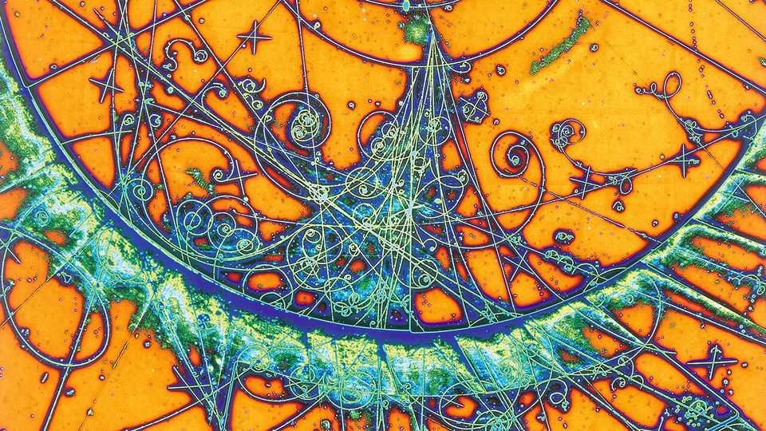

AI has proved that a theory underpinning fundamental physics is trustworthy
The key insights appear to have come from human physicists

Nov 12th 2026
ON OCTOBER 26TH OpenAI, an artificial-intelligence lab, announced that one of its unreleased models had taken a significant step towards solving one of the open Millennium Prize problems, some of the biggest challenges in maths. Known as the Yang-Mills existence and mass gap problem, it is closely related to models of the subatomic world routinely used by quantum physicists. Those eager to see the proof have had to wait while a committee of five external physicists assessed its validity. On November 10th they declared themselves satisfied.
The problem concerns a set of equations, known as Yang-Mills theory, which physicists have long used to describe the working of three of the four known fundamental forces: electromagnetism and the strong and weak nuclear forces. The fourth force, gravity, requires a separate description known as general relativity.
Physicists have good reason to trust Yang-Mills theory. They use it to make predictions about particle behaviour which are borne out to a staggering degree of accuracy. Mathematicians, however, being of a more rigorous bent, would like to confirm it stands on firm mathematical footing.
The first part of the Yang-Mills problem aims to do just that. That involves proving the theory breaks no rules and has no exceptions, all without making any simplifying approximations. The committee which OpenAI convened has confirmed that, in their judgment, the model has successfully cleared that hurdle. To do so, the physicists checked that the AI’s formalisation of its solution in Lean, computer code confirming the proof’s internal logic, corresponded to the problem at hand. Although the committee has published the formalisation, which runs to around 1m lines of computer code, the AI’s 1,147-page “natural language” proof—which, the committee members said, “we do not claim to fully understand”—has not yet been shared. No reason for this secrecy has yet been given.
What is known for now is that the proof builds on techniques developed in the 1980s by Tadeusz Balaban, a researcher at Rutgers University. “There were no obvious showstoppers in his programme, but [it] was very complicated,” says Edward Witten, a mathematician and physicist at the Institute for Advanced Study in New Jersey, who helped formulate the official Yang-Mills problem statement. “I actually believe if there had been ten Balabans, this would have been done by the 1990s.”
Dr Witten calls OpenAI’s proof a “very important milestone”, but reckons it is unlikely to change how physicists work. A solution to the second part of the Yang-Mills problem, which involves showing that the theory predicts no massless particles (and on which OpenAI’s latest results shed no light), would be a different story, however. Such a proof may shed light on why subatomic particles called quarks bind together to form the protons and neutrons found in atomic nuclei. Though the AI had Dr Balaban’s work to draw upon when proving Yang-Mills’s solidity, Dr Witten believes no such handholds exist for the mass gap. “At the risk of possibly sounding foolish,” he says, “my guess is that it’s pretty far off.” ■